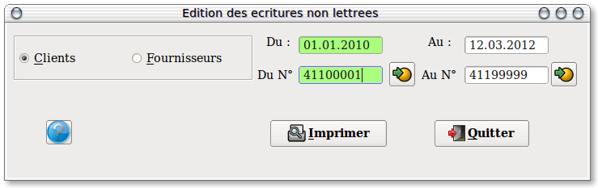

~ Comptabilité et Facturation Laurux ~

~ Comptabilité et Facturation Laurux ~ |
|
|
|

Ce programme va imprimer, pour une sélection de comptes, les écritures
non lettrées. Si le lettrage est correctement effectué cette liste sera
la liste des impayés ou selon une autre terminologie la justification
du solde des comptes.
----------------------------------------------------------------------------------------------------------------------